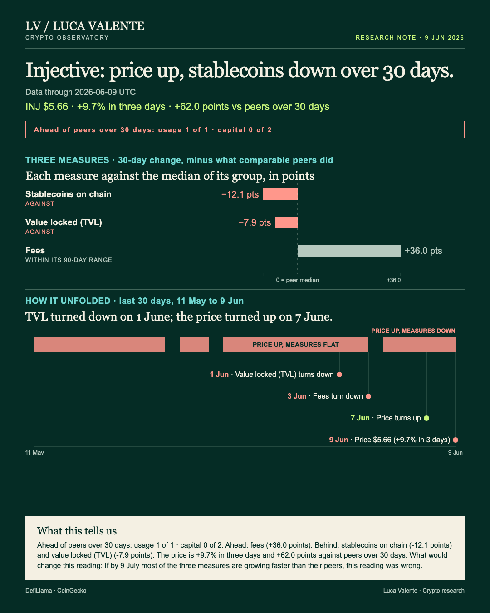
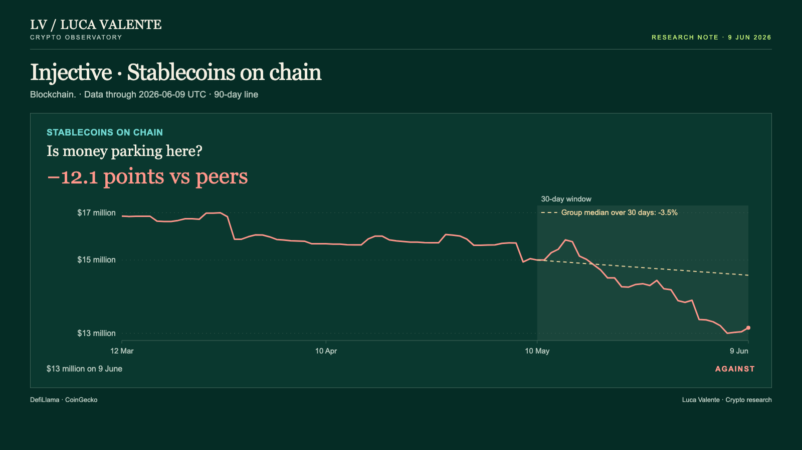
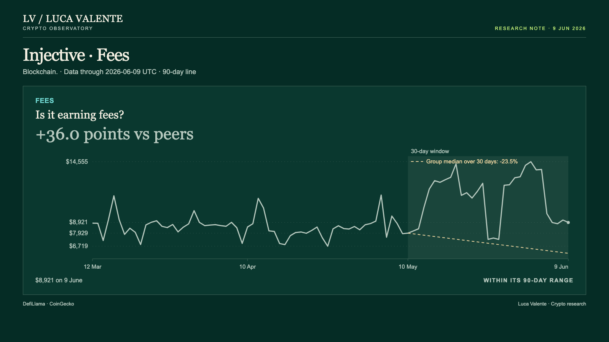

Training note, written on 24 September 2026 from data as of 9 June 2026. Not part of the published series.
34.3% In A Month For INJ, Less Capital On Injective

What is INJ's 34.3% rise in a month standing on, if the money held on Injective's own chain shrank faster than at its peers? It matters to anyone who takes a token's price for a verdict on its chain, and here the two point different ways. Injective is a blockchain. INJ is its token.
Three measures of the chain sit side by side above, each showing its 30-day change, 11 May to 9 June, minus the median of the entities in its group of 36 that report it, Injective included. Zero marks that median. Only fees, the dollars users pay each day to use the chain, stand above it, at +36.0 points. Two sit below.
Each of those two measures capital: the stablecoins held on Injective, and value locked, the money deposited in contracts there, while INJ's price, $5.66 on 9 June, sits +62.0 points ahead of its own group median. That is the gap. I read INJ's month as a rise the capital on its chain does not share, and fees are the one line that disagrees.
Fees count use of the chain, while stablecoins and value locked count capital held on it, and I keep those two families apart. They answer different questions. A skeptic of INJ's price would start from capital, a skeptic of this note from fees. Both deserve a hearing.
Take the stablecoins on Injective, at dollar value: $13 million on 9 June, down 15.6% from $15 million on 10 May, while the median of the 33 entities in its group that report them, Injective included, fell 3.5%. Net, -12.1 points. With the median almost flat, this is not a drain every chain shared. The 90-day high was $17 million, on 26 March.

Next is value locked: down 29.0% over 30 days, from $14 million on 10 May to $10 million on 9 June. The median of the 35 entities in its group that report it, Injective included, fell 21.2%. That leaves -7.9 points. The group's median fell as well, just not as far.
Counting in dollars adds a caveat. Value locked is a dollar figure, and some of what it gained or lost over 30 days may reflect the price of whatever sits in those contracts; INJ moved +34.3% over those same 30 days, from $4.21 on 10 May to $5.66 on 9 June. The stablecoin figure is different. It reads the chain itself.
Put together, the skeptic of the price holds this: INJ is +62.0 points ahead of the median of the 32 entities in its group with a listed price, Injective included, a median that lost 27.7%. Both capital measures sit behind theirs. It is a fair case, and it says nothing about where INJ goes. These numbers never tie the token's price to the capital on its chain; they show the two moving apart, and no more.
Against all this, a skeptic of this note would put fees: $8,921 on 9 June, up 12.5% from $7,929 on 10 May, while the median of the 35 entities in its group that report fees, Injective included, fell 23.5%. Net, +36.0 points. The chain earned more in a month when its group median earned less. The point is real.

Two things keep that point from overturning the thesis. First, fees are one measure of three, and the other two both sit behind their medians. Second, the fee line turned down on 3 June and has been lower on 5 of the 7 days since, with a 2.5% slip on 9 June alone, from $9,148 to $8,921. The 90-day high: $14,555, on 2 June.
Earliest to turn was value locked: down from 1 June, lower on 6 of the 9 days since, on a line down 29.0% over 30 days. Fees followed on 3 June. INJ and the stablecoins both turned up on 7 June and have risen three days running: INJ by 9.7% from $5.15 on 6 June, the stablecoins by 1.1% on 9 June alone. Against a 30-day fall of 15.6%, that turn is small.
Compare Worldcoin, in the same group, which I wrote about on 8 June: stablecoins on its chain were +37.1 points and value locked +65.0 points above their medians over 30 days, and WLD +100.2 points above its median, though down 13.0% in three days. Capital and price both led there. I argued that a good part of that month was already in the price. Injective has the price without the capital.
Some things I cannot see from here: this note has no trading volumes, no developer commits and no count of users or wallets for Injective. No news, no causes either. Why INJ rose is not something the numbers answer. They stop on 9 June 2026.
Being wrong here needs less than it seems: fees already sit above their median, and if they stay there, one capital measure pulling ahead of its peers would be enough. If by 9 July most of the three measures are growing faster than their peers, this reading was wrong. Everything above rests on one gap, capital on Injective shrinking against its group while INJ climbs; with most of the three outgrowing their peers by that date, the gap would be gone. That would settle it.
Until that date, the two skeptics read the same month from opposite ends, one holding the capital figures, the other holding fees. Fees, at +36.0 points, still disagree with me.
Sources: DefiLlama (fees, stablecoins, value locked); CoinGecko (INJ price).
Peer group: 36 chains tracked by DefiLlama. 'Net of the group' is the 30-day change minus the group's median.
Not financial advice. This is a research note based on public on-chain data.